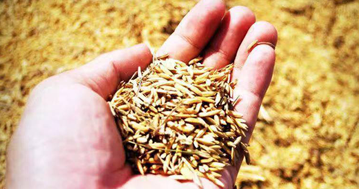

Wunong Leap Dragon Gate
From June 30 to July 1, 2019, Wunong 's 3rd National Chairman's Conference was successfully held
at Wunong (Shenzhen) Technology Co., Ltd. Headquarters with the theme of "Wunong Leap Dragon
Gate
[Read All]
issuing time：2019-07-05

Wunong Superior products bright online, three steps to teach
you how to share Commission
At 00:00 on July 4, 2019, it is a special time for Wunong, Because Wunong Superior
products 's new mall of high-quality food and agriculture shines on the line!
[Read All]
issuing time：2019-07-05

Eighth National Agricultural Products Promotion Conference Of
Wunong was successfully held in Qujiang, Xi'an
On 20 November 2018,,the 8th National Agricultural Products Promotion
Conference held by Wunong (Shenzhen) Technology Co., Ltd.was successfully held
in Qujiang International Conference Center, Xi'an City.
[Read All]
issuing time： 2018-11-22

Secretary Zhang, Secretary of the Municipal Party Committee of Mishan City,
and his delegation visited the Headquarters of Wunong (Shenzhen)
Technology Co., Ltd. for guidance.
On the afternoon of November 2, 2018, Secretary Zhang, Secretary of the
Municipal Committee of Mishan City, Heilongjiang Province, and his delegation
visited the Headquarters of Wunong (Shenzhen) Technology Co., Ltd. for
guidance.
[Read All]
issuing time：2018-11-07

Wunong First Supplier Conference Successfully
The first Wunong’s Supplier Conference was held in Shenzhen from September 21 to
22, 2018. Wunong’s suppliers from more than 20 provinces and municipalities all
over the country participated in the meeting.
[Read All]
issuing time：2018-09-24

Seventh National Agricultural Products Promotion Conference Of
Wunong Was Held in Shaanxi
Wunong's 7th National Agricultural Products Promotion Conference closed on
August 21, 2018 in Baoji, Shaanxi Province. The conference was defined as a
watershed and turning point in the development history of the Agricultural and
Biological Network.
[Read All]
issuing time：2018-09-01

Sixth National Agricultural Products Promotion Conference Of Wunong was
successfully held in Zhengzhou!
Just entering the second half of 2018, on July 2, on such a clear, breezy and smooth
day, the 6th Agricultural Products Promotion Conference of Wunong was
successfully held in Zhengzhou, and achieved complete success!
[Read All]
issuing time：2018-07-05